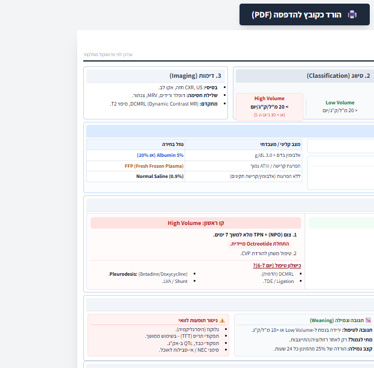

המסמך המצורף בנוי כאלגוריתם חזותי. בגרסה זו הוא מוצג בתוך האפליקציה כפי שנמסר, כדי לשמור על הנוסח והמבנה המקוריים.
מבנה האלגוריתם
- קריטריונים לאבחנה
- סיווג Low Volume / High Volume
- Imaging
- Fluid replacement
- Management strategy
- Octreotide protocol / weaning
- Supplements & labs
- טיפול ממוקד נוסף לפי מצב קליני

אפשר לבצע zoom בדפדפן. מסמך המקור זמין בכפתור למעלה.